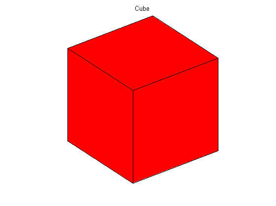
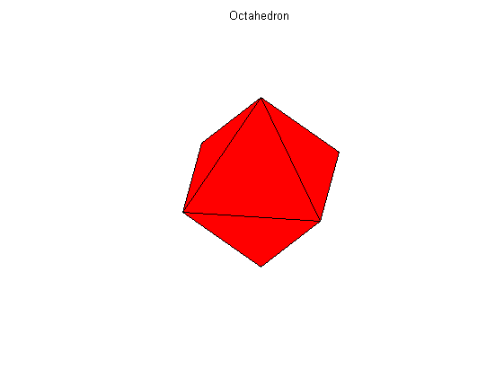
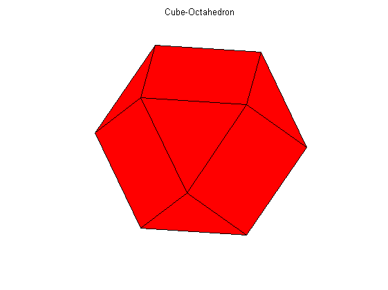
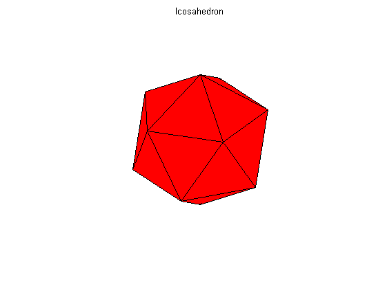
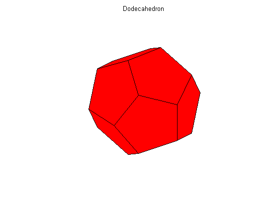
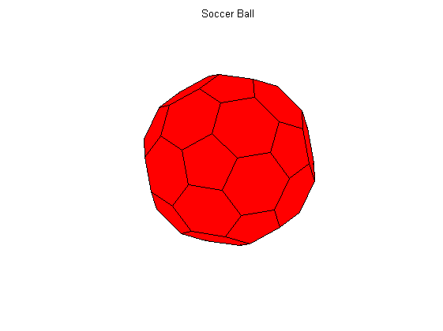
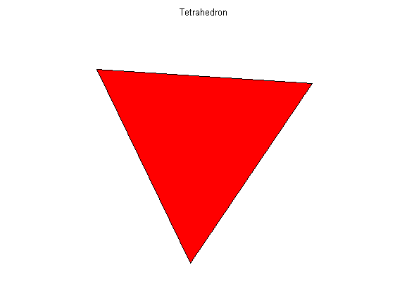
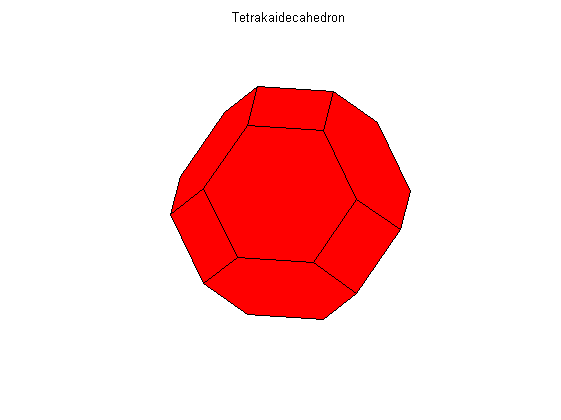
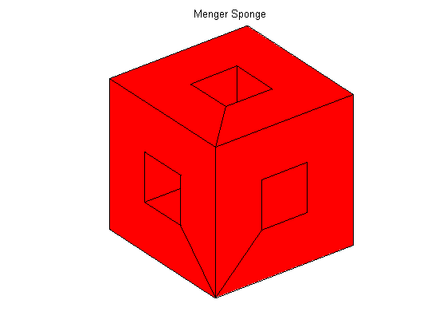

Contents
function demoPolyhedra(varargin)
Cube
figure(1); clf;
[v f] = createCube;
drawMesh(v, f);
view(3); axis('vis3d'); axis off;
title('Cube');

Octahedron
figure(1); clf;
[v f] = createOctahedron;
drawMesh(v, f);
view(3); axis('vis3d'); axis off;
title('Octahedron');

Cube-Octahedron
figure(1); clf;
[v f] = createCubeOctahedron;
drawMesh(v, f);
view(3); axis('vis3d'); axis off;
title('Cube-Octahedron');

Icosahedron
figure(1); clf;
[v f] = createIcosahedron;
drawMesh(v, f);
view(3); axis('vis3d'); axis off;
title('Icosahedron');

Dodecahedron
figure(1); clf;
[v f] = createDodecahedron;
drawMesh(v, f);
view(3); axis('vis3d'); axis off;
title('Dodecahedron');

Soccer Ball, buckyall, C60...
figure(1); clf;
[v f] = createSoccerBall;
drawMesh(v, f);
view(3); axis('vis3d'); axis off;
title('Soccer Ball');

Tetrahedron
figure(1); clf;
[v f] = createTetrahedron;
drawMesh(v, f);
view(3); axis('vis3d'); axis off;
title('Tetrahedron');

Tetrakaidecahedron
figure(1); clf;
[v f] = createTetrakaidecahedron;
drawMesh(v, f);
view(3); axis('vis3d'); axis off;
title('Tetrakaidecahedron');

Menger Sponge
figure(1); clf;
[v e f] = createMengerSponge;
drawMesh(v, f);
view(3); axis('vis3d'); axis off;
title('Menger Sponge');
